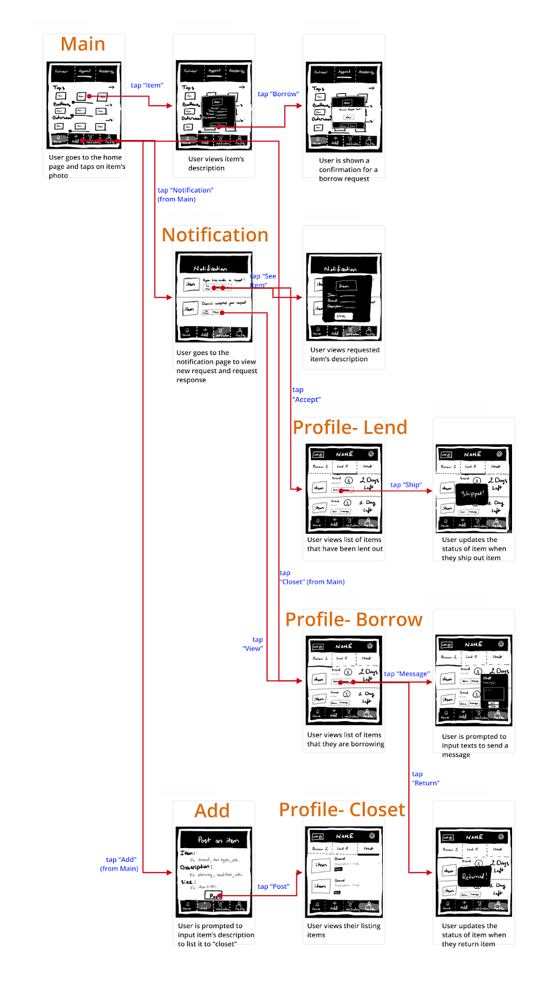
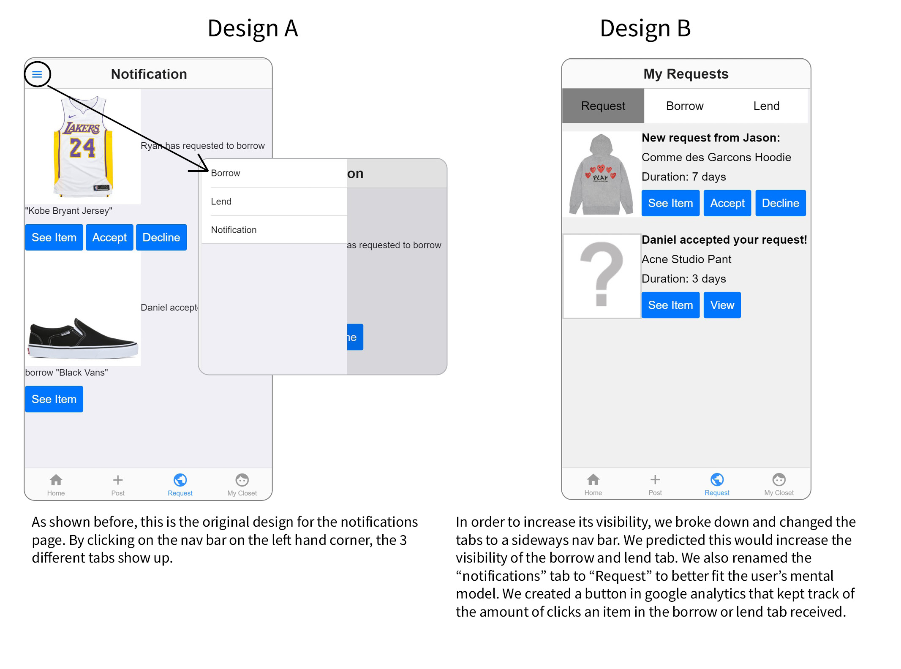

Borrowing 'N Go Clothes App
Overview
Borrow N Go is a mobile app that allows users to borrow clothes from users near them, providing a more eco-friendly and economical way for users to wear the clothes they want. Over the course of 10 weeks, my team and I worked together to create a mobile web app . This project was made in an interactive design class taught by Scott Klemmer.
Team: Tin Phan, Sophia Dominguez, Kristine Marie Baluyot
Tools: Figma, HTML, CSS, JavaScript, Onsen UI, Bootstrap, NodeJs, Firebase, Heroku, Adobe XD, Firebase

Problem Statement
Whether you buy or rent your clothes, the bill can add up. Was that shirt you only wore once really worth it? With the constant changing fashion trends, and closets stuffed to the brim with clothing we only wore once, people need an economical way to dress as they like.
User Research/ Needfinding
Inspiration: After listening to many friends complaints, I noticed that there was a need for a clothes lending system. As a university student with friends in different clubs and activities, many people around me kept running into the same problem, they needed to borrow a certain clothing item. People needed something to complete their halloween outfits, or a new dress for a party next weekend or a white shirt for their group picture.
As a society, clothing is a source of waste. The average person spends $161 dollars on clothes a month.1 The average American only wears 20% of their closet on a daily basis. 2 Fast Fashion offers a semi-cheap solution, but at the same time it is killing our planet. 85% of our clothes ends up in the landfill, and it breaks down into microfibers that pollute our water. 3
Competitive audit
Why choose us over our competitors: Unlike other clothing options, our app does not require users to spend money. Buying new clothes can be expensive, non eco-friendly, and can take up so much space in your closet. Renting clothes, although eco-friendly, requires the user to spend money. They spend less than if they bought it, but they are still spending a monthly amount on clothes they do not get to keep. Our app meets users needs while keeping costs low.

Storyboards
As a team, after seeing that there was a need, created different storyboards for different problems presented.

In Scenario #2, we have Helen whose job requires her to keep up with the trends. She does not have a big budget for clothes due to her salary and all of the renting clothes companies do not carry the styles she wants. Her problem is solved by our app, as she finds the variety she was looking for. Here the user’s main need was an economical way to keep up with fashion with a wide range of options to choose from.

In Scenario #2, we have Helen whose job requires her to keep up with the trends. She does not have a big budget for clothes due to her salary and all of the renting clothes companies do not carry the styles she wants. Her problem is solved by our app, as she finds the variety she was looking for. Here the user’s main need was an economical way to keep up with fashion with a wide range of options to choose from.
Low-Fidelity Prototypes
Sketches
We first created some digital sketches. Here we decided the important features our app needed and the flow of our app we wanted our users to follow.

We then created some digital wireframes on Adobe XD of our two main pages. Using these wirefames, we were able to visualize our app better.
Bare Bones
We then created a semi-functional prototype using an open-source UI framework called Onsen UI. In this prototype, we focused more on the basic functionality rather than the aesthetics. Link to this prototype.
How it works: you find a clothing item you want to borrow on the home page, and you click on it and request to borrow it. From there you wait to see if the user will accept or decline your request. If they accept it, you can message them on how to exchange the item. Here we made some design changes based on our coding abilities, like adding a nav bar instead of a swipeable separation between apparel and shoes.
Feedback we received from the skeleton: After presenting our skeleton to our peers, we received valuable feedback we implemented before user testing. One main concern that was brought up was how are we going to implement a system to keep people from just borrowing and never lending? In response to this, we decided to implement a point system that will act as an incentive to keep users engaged and to lend out items. We also received some feedback on the layout, such as separation of notifications on the notification tab and the popups. And how certain icons/wording did not fit the users’ mental models. We took the criticism into account and changed our app to better suit our users.
User testing
Next, we conducted 3 in depth user tests on our high fidelity prototype. During these user tests, my team and I focused on observing users conduct specific tasks without any input. We started off by having all participants sign a consent form, then we read a script explaining to the app and then we asked users to conduct tasks on our app. We asked them to conduct tasks like add an item to your closet, and request to borrow an item. We then asked some debriefing questions to get a better sense of what was going through their minds as they conducted the tasks and their general thoughts on the app.
Our general findings that were consistent between all 3 participants were that:
1. The apparel and footwear layouts were inconsistent. The home page separated shoes and apparel through a nav bar and due to the apparel being the landing page, it looked different then the shoes tab.
The app lacked feedback in certain areas, such as a verification or confirmation that an item was added to their closet successfully.
The navigation on the profile page was ambiguous. The users missed the nav bar that contained the borrow and lend tabs in the notifications tab, creating some confusion. This also brought up to our attention how certain features lacked visibility.
Within our notification tab, we separated the different kinds of notifications on a nav bar. This hid the borrow and lend notifications, making it harder for the user to perform tasks. In our next user tests, we changed this tab to try to solve this problem.
And lastly, the users liked the general flow of the app. They found it simple and not overwhelming.
Alternative Designs
A/B testing
Taking the Notifications tab and the lack of visibility of the borrow and lend tabs, we decided to conduct an A/B test. We created a different version of the notifications tab and used google analytics to randomize which user got version A or B. We distributed our app to 34 users that were interested in fashion, clothes shopping and/or have borrowed clothing from someone in the past.

We measured the amount of clicks on buttons on the borrow and lend tabs to see which version led to more views of the borrow and lend tabs. Design B had the most amount of clicks and was the preferred version by the instructor, so we went with that design.
Additionally we received feedback from our peers on the branding of our app, the visibility of the shoes tab and the login page. We were told that we should appeal to our target audience more by rebranding our app, focusing more on the aesthetics of it.

Changes made to Final Design


Publicizing our App
After we made our final changes, my team and I publized our app on our social media to invite people to view our app and give us general feedback on what they thought of it. We received a lot of positive feedback about our app and user’s liked the general idea. Over the course of a week we got over 120 users.
Next Steps:
If we had more time, I would have liked to perform more user testing on our last prototype. Although we got some informal feedback, we would have liked to have done some user testing to see if the changes we made created a better user experience. We also would have liked to make the app more personalizable, for example allowing users to view clothes that interests them more on the home screen. We also would have liked to reimplement the search bar to make it easier to find an item. A long term goal would be to create different versions for different devices. Our current app is created to best be viewed on an iPhone. If we were able to do it again, we would have asked for help earlier in the process. We had a little trouble with some of the coding aspects and we would have been able to make more changes and get them tested if we had asked for help earlier.